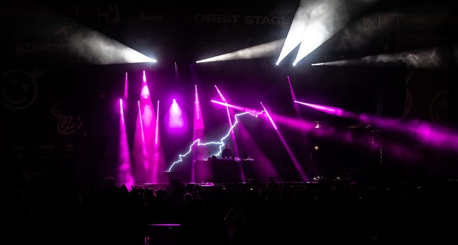

Full national dates for Boys Noize Records tour



We already knew some of the miscreants from the notorious Boys Noize Records stable would be here I nAugust to make some noise, but now ITM has confirmation they’ll be making a racket in pretty much every corner of the country – from Adelaide, to Canberra, to the Gold Coast and back again.
The crew are under the musical wing of none other than Boys Noize AKA Alex Rihda himself, and for this tour the ‘miscreants’ in question will be Shadowdancer, touring on the back of the Golden Traxe artist album, as well as Djedjotronic and Strip Steve. Insert obligatory joke about Laurent Garnier being pissed off here.
Boys Noize Records tour dates:
Thurs August 27th – Ruby Tramp, Gold Coast
Fri August 28th – Roxanne Parlour, Melbourne
Sat August 29th – Metro, Sydney
Sun August 30th – Electric Circus, Adelaide
Thur September 3rd – Monastery, Brisbane
Fri September 4th – Academy, Canberra
Sat September 5th – Shape, Perth